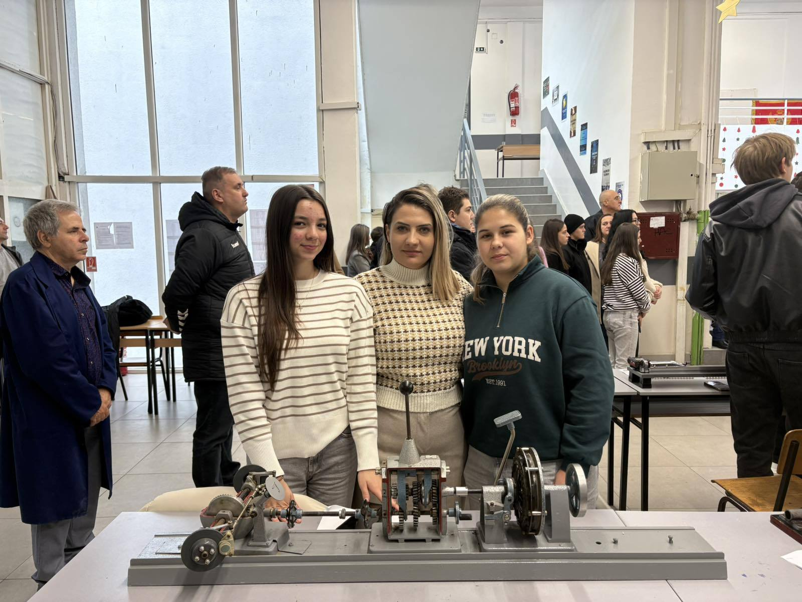

Макинова & Еконова
Учениците на ДСУ РЦСОО „Коле Неделковски“ во улога на врснички едукатори за дуално образование
Нашите ученици уште еднаш докажаа дека се најдобри во иновациите. Тимот се истакна на овогодинешната меѓународна изложба МАКИНОВА и ЕКОНОВА, каде беа наградени за нивните еколошки и технички решенија.